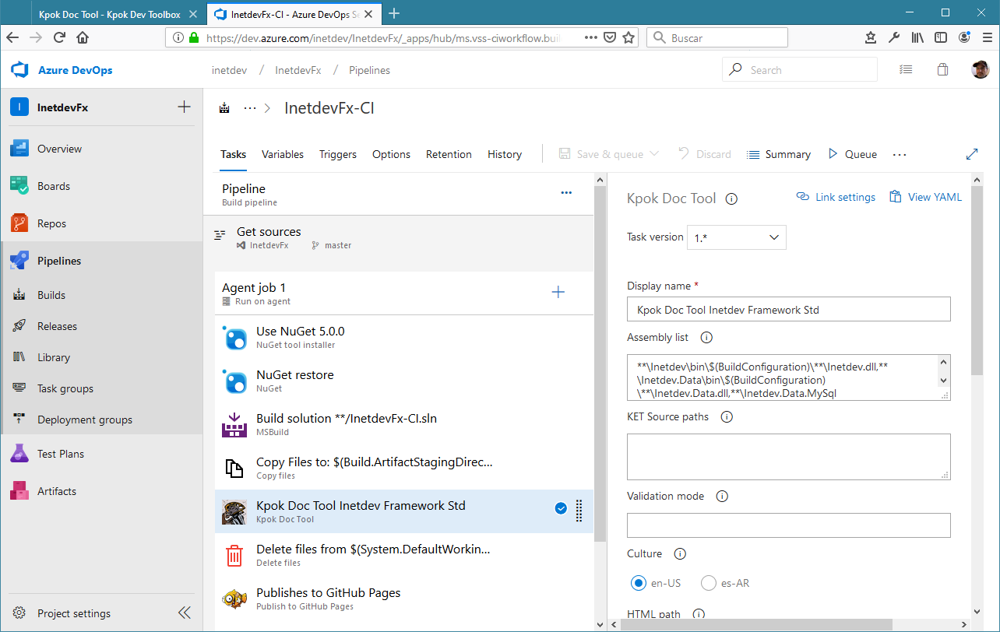

Kpok Doc Tool
Kpok Doc Tool is an extension form Azure DevOps Services and Azure DevOps
Server that configured within a build pipeline, automatically generate technical documentation
for software products.
A example of the generated documentation can be
found here. This is the technical
documentation of the Inetdev Framework Std automatically generated with this tool.
Usage
This tool is added as a task within a build pipeline after the build task (in order to get the XML
documentation generated first) and configured to generate and/or validate the documentation.

Configuration options
- Assembly list
-
A comma separated list of assemblies to build the documentation of. Wilcard characters are
allows and .dll and .exe files can be pointed to. The documentation will be built if the
corresponding XML documentation file is found.
- KET Source paths
-
A comma separated list of paths where Kpok Entity Tool
models will be looked from. If models are found,
documentation for them will be generated.
- Validation mode
-
Configures how documentation validation will be performed. All public and protected
"summaries" on types, methods, properties, KET models, etc. are required and will generate
errors if left blank. Settings options will add more requirements to the validation process.
Options
-
WarnMethodArguments: (default) generates warnings if method arguments
are empty but no warning is generated if all of them are empty
-
ErrorOnMethodArguments: generates errors if any method argument is empty.
-
ErrorOnTypeRemarks: generates errors if type remarks are empty.
-
ErrorOnTypeExample: generates errors if type examples are empty.
-
NoValidate: Disables documentation validation.
- Culture
-
Select the culture to generate the documentation. Titles will be generated in the specified
culture, information from XML documentation files will not be changed. Only en-US (default)
and es-AR are supported.
- HTML path
-
Root path where HTML documentation will be generated.
- Markdown path
-
Root path where markdown documentation will be generated.
- Project title
-
A title for the documentation project.
- Build number
-
A build number to be written in documentation.
- Home url
-
The URL of the documentation home page.
- Project description
-
A description for the documentation project.
Notes
-
If HTML path or Markdown path are specified,
Project title and Build number are required.
-
If HTML path and Markdown path are not specified,
this tool will not generate any documentation but, it will validate the documentation
and generate errors and/or warnings accordingly. Usefull for example, to validatate that
documentation are completed within a PR build.